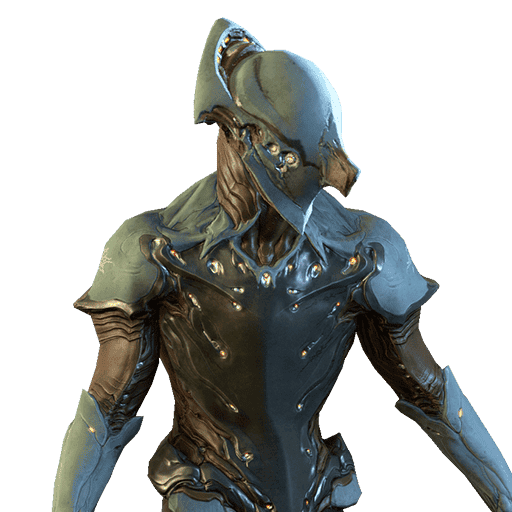
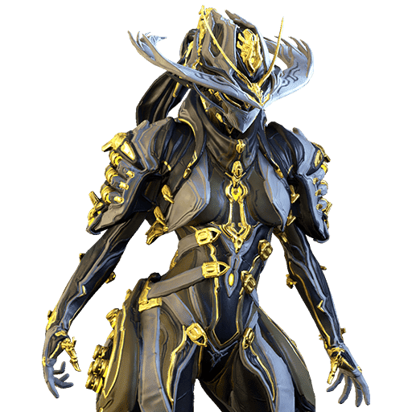
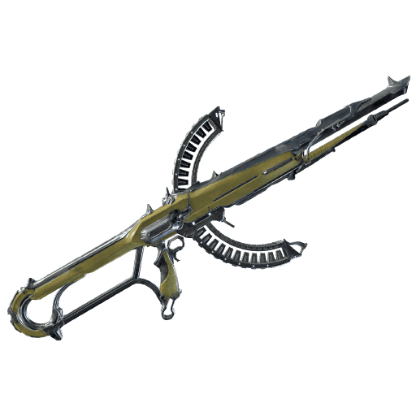
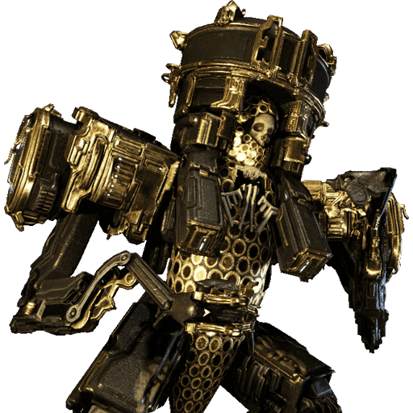
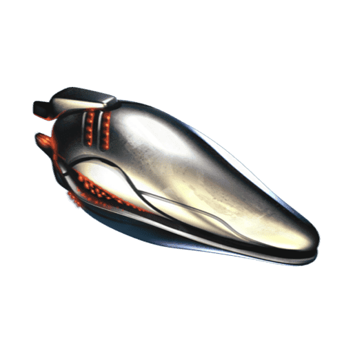
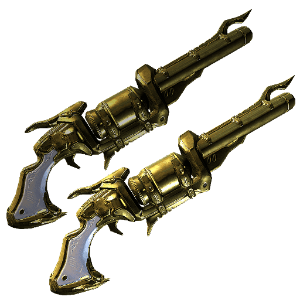
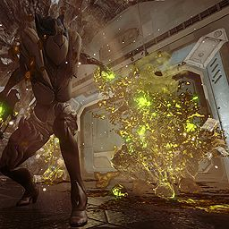

De Volt
a Mesa Prime
Do Coração de Deimos até limpar a tela com o Peacemaker. Tem build de cada fase, as armas certas pro seu MR, onde farmar cada mod e recurso, e um checklist que salva seu progresso.


A rota
Clique em uma etapa para abrirComo usar: clique nos mods e nas armas pra marcar o que você já tem (✓), e nos passos pra marcar como feitos. O progresso fica salvo no seu navegador. A aba Onde farmar busca qualquer mod ou recurso.
Volt: build inicial
Duas versões: uma pra agora, sem Reator Orokin, e outra pra quando você tiver o reator e algumas Formas.
Habilidades
O que cada botão fazChoque
Projétil elétrico que atordoa. Use pra acabar com inimigos soltos.
Velocidade
Mais velocidade de movimento, ataque e recarga pra você e o time. Ótimo pra correr pelo Cambion Drift.
Escudo Elétrico
Atire através dele: seus tiros ganham dano elétrico e mais dano crítico. É seu maior ganho de dano.
Descarga
Pulso em área que paralisa e eletrocuta todos à volta. É o botão de pânico.
Passiva
Andar acumula eletricidade, que sai no próximo ataque.
Como jogar: abra com 2 pra atravessar o mapa. Na luta, solte 3 na frente e atire por trás dele. Se for cercado, aperte 4. O 1 é só pra limpar o resto.
Build A · Sem Reator
Coloque na ordem até a capacidade acabarMelhor farm do começo: bounty Lvl 5-15 do Konzu, em Cetus (Terra). No estágio final, cada recompensa tem 30,6% de chance de Intensify, Streamline ou Stretch. A Point Blank e a Hornet Strike também caem lá. Use uma aura de polaridade Madurai (V) pra ganhar mais capacidade.
Build B · Com Reator + Formas
A versão completaReator Orokin dobra a capacidade de mods. Fontes: Junção de Vênus (blueprint), Invasões, loja da Nightwave e Sortie. Coloque no Volt o quanto antes.
Energia: crafte Energy Pads no Foundry e, quando abrir o Focus (The Second Dream), use a escola Zenurik.

Armas por MR
No começo, quem mata é a arma, não o frame. Esta é a sequência de troca conforme seu Mastery Rank sobe, com a build de mods de cada tipo de arma.
Como sobe o MR: cada arma ou frame novo que você leva ao rank 30 dá maestria. Depois, faça o teste de MR no Relay ou no Orbiter. Então não fique preso numa arma só: upe, faça a próxima e venda a antiga se precisar de slot. As armas do Mercado só custam créditos (blueprint) e recursos.
Builds por tipo de arma
Os números indicam a prioridade de encaixeElementos
Combine dois mods elementais pra formar um terceiroMultiplica o dano na vida. É o melhor elemento geral contra Grineer e Infestados.
Tira armadura. Use contra Grineer pesados e chefes blindados.
Destrói escudos. Use contra Corpus.
Queima, causa pânico e tira armadura com o tempo. Combina bem com Viral (Viral + Calor).
A ordem dos mods no arsenal define a combinação. Os dois primeiros elementais de cima pra baixo se juntam. Coloque os mods elementais lado a lado na ordem que você quer.

Coração de Deimos
A quest que você está fazendo. Ela libera o Necralisk, o Syndicate Entrati, a Xaku e o Voidrig. E o mais importante: a Junção de Júpiter fica em Deimos.
Sem terminar esta quest você não abre Júpiter, e com isso fica sem Europa, Saturno, Urano e o resto do mapa.
Depois da quest, aproveite Deimos
Orokin Cell: Terrorem e o Cambion Drift. Você vai precisar de 5 pra Mesa Prime.
Nano Spores: Hyf e Terrorem. A Mesa Prime pede 575.
Bounties do Cambion Drift dão Blood Rush e Weeping Wounds (melee) e standing com os Entrati, que vendem a Keratinos, a Zymos e a Cedo.

Abrir o mapa
Cada Junção pede algumas tarefas (abra a Junção no mapa pra ver a lista) e uma luta contra um Specter. A ordem mais rápida é esta.
Tracejado = abre sem Junção (o mesmo vale pro Void e a Lua). Dourado = a Junção que depende do Coração de Deimos.
Atalho: faça as Junções e os chefes em esquadrão público. Vai muito mais rápido, e ninguém liga se você é novato.
Pegar a Mesa Prime
As peças, as relíquias, os recursos e a ordem certa de construir.
A Mesa Prime está no Vault: as relíquias dela não caem mais nas missões normais. As peças e relíquias que já existem continuam sendo negociáveis.
Três caminhos
Trocar
Compre o set ou as peças com platina no warframe.market e faça a troca no Maroo's Bazaar (Marte) ou num Dojo.
Pra ganhar platina, venda as peças Prime que você abrir nas fissuras.
Varzia
A Prime Resurgence (Maroo's Bazaar) vende relíquias de Primes em rotação por Aya.
Veja toda semana se a Mesa Prime entrou. A Aya cai nas bounties de Deimos e de Cetus.
Relíquias
Compre as relíquias certas (veja abaixo) de outros jogadores e abra nas Fissuras do Void.
Refine pra Radiant (100 Void Traces) e entre num grupo 4b4.
Peças e custo de construção
FoundryRelíquias
Todas estão no Vault| Peça | Raridade | Relíquias |
|---|---|---|
| Neuroptics | Rara | Axi M3 · Axi M4 · Lith M3 · Lith M4 · Lith M5 · Vanguard M1 |
| Systems | Incomum Rara | Lith D5 · Neo H3 · Vanguard C1 (incomum) — Lith M6 · Neo M2 · Neo M3 (rara) |
| Blueprint | Incomum | Lith C6 · Lith D1 · Lith N9 · Lith P7 · Meso P3 · Meso R2 · Neo Z2 · Neo Z3 · Vanguard P1 (comum) |
| Chassis | Comum | Axi H4 · Axi M1 · Lith R1 · Lith S10 · Meso C4 · Meso L2 · Neo A3 · Neo C1 · Neo R4 · Vanguard E1 |
Onde farmar os recursos

Build da Mesa Prime
A Peacemaker mira sozinha em tudo que estiver na tela. O dano depende da força de habilidade e dos mods das Regulators Prime.
Habilidades
Ballistic Battery
Guarda o dano dos seus tiros pra soltar num disparo carregado.
Shooting Gallery
Buff de dano pros aliados e atordoa inimigos.
Shatter Shield
Reduz muito o dano de tiros e devolve parte dele. Deixe sempre ligado.
Peacemaker
As Regulators miram sozinhas em tudo no seu campo de visão. É isso que limpa a tela.
Passiva
Mais dano com pistolas e menos tempo pra sacar.
As Regulators Prime são uma arma "exaltada" com mods próprios. No Arsenal, abra a Mesa e entre no slot das Regulators. Elas usam mods de pistola, separados da sua arma secundária.
Mesa Prime · Warframe
Reator + 2-3 FormasRegulators Prime · Peacemaker
Mods de pistolaUpgrades depois: troque Pistol Gambit e Target Cracker pelas versões Primed (Baro Ki'Teer) e adicione Galvanized Crosshairs, Shot e Diffusion (loja de Arbitragens). Arcanes: Molt Augmented (Holdfasts) e Arcane Energize.
Arcanes
Armas pra fase da Mesa
MR 12+Ordem de upgrade: 1º Reator Orokin → 2º Mesa's Waltz (sem ele você fica quase parado durante a Peacemaker) → 3º mods das Regulators no máximo → 4º Formas. Depois, o Helminth (Entrati) troca o 1 por uma habilidade de outro frame, como o Roar da Rhino.

Onde farmar
Todos os mods do guia num lugar só, com a fonte e a chance de drop. Clique pra marcar o que você já tem.